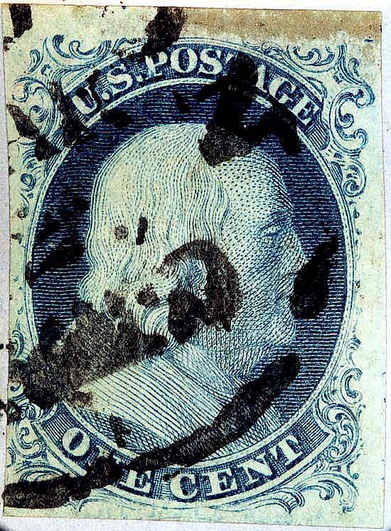
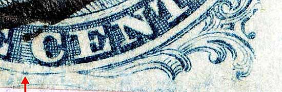
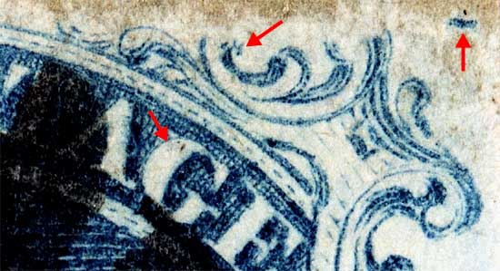
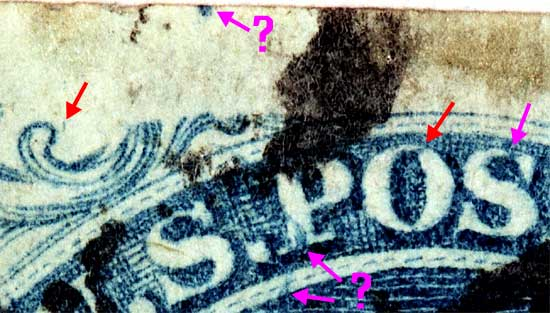

1¢ Franklin Issue of 1851-1857, PLATE 1 EARLY Position 6L1E (Scott #7) |
| Scott #7 Blue, Type II, Relief T Only Issued Imperforate |
|  |
| Figure 1. (below) Close up detail of a Neunken indicated plating mark on the lower curved line between E and C.
 |
| Figure 2. (below) Close up detail of Neinken indicated plating marks. The dot in the "G" of POSTAGE is very faint on this stamp and the photomicrograph does not show it well. The plaing mats also indicate a bar across the top of the "T" of POSTAGE, but on this copy it is obscured by cancellation ink.
 |
| Figure 3. (below) Red arrows indicate plating marks shown on the Neinken plating mats.The violet arrows are other marks which warrant further study and confirmation from other students of this issue.
 |
DISCLAIMER and COPYRIGHT INFORMATION: Thanks for visiting this site. I hope you learn something new as we are making new discoveries all the time. You, the visitor, have my permission to link to my pages and to share the INFORMATION with others. The images themselves fall under the fair use guidelines established by the United States Congress and Copyright law. Basically contact us before using. I also ask in return that you send me an e-mail if I have made a mistake, or have made some other technical blunder that in my rush to put these pages up would cause the visitor confusion. Please also visit my other website at www.slingshotvenus.com. and support the live music arts. While your there, be sure to purchase our music. There are not many philatelic rock stars around and we need all the help we can get. :-) I can be reached at: nerdman@ix.netcom.com UPDATE: 10/8/06 |